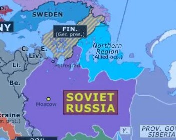
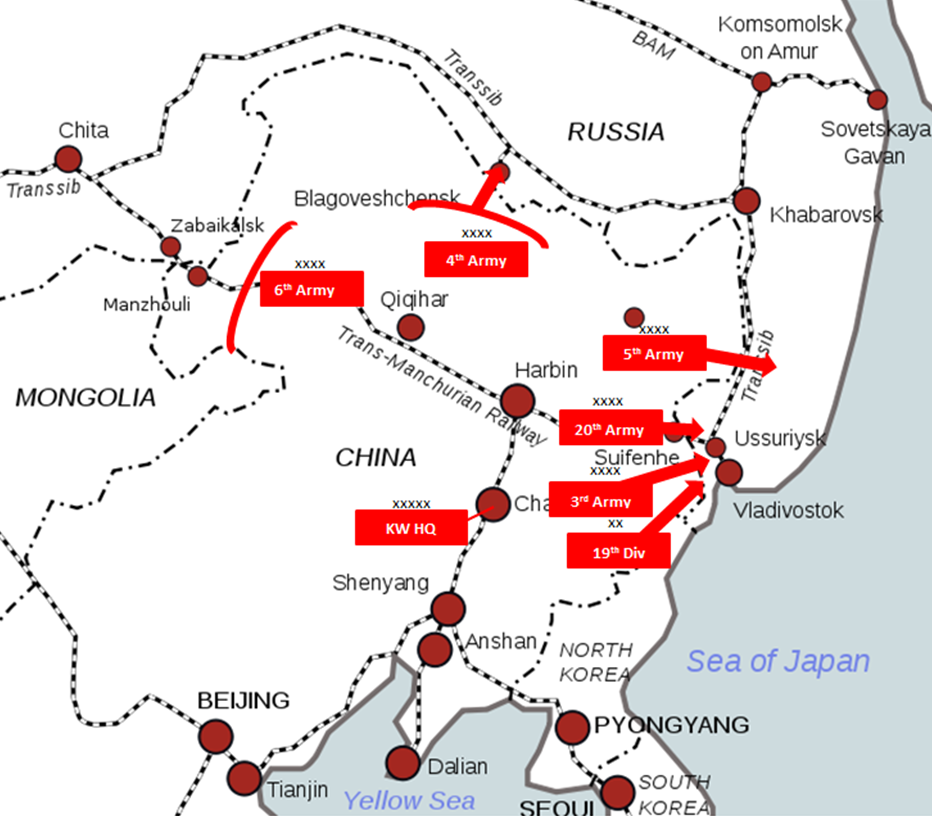
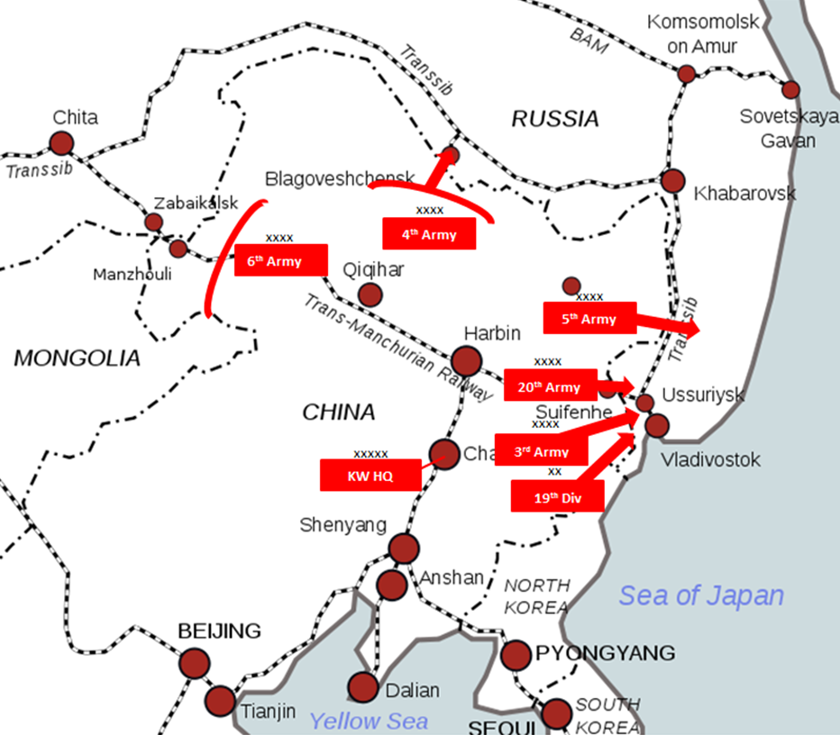

INTERVENTION FROM OUTSIDE
German Empire
The German Empire was already invading Russia before the civil war, but the ignition of the civil war helped them to push in even further. They formed and released new countries loyal to the Empire during the invasion, with one of the more well-known ones being the Ukrainian People's Republic, lasting from 1918 - 1920. The Germans forming these new countries allowed them to solidify influence in these regions, and indirectly aided in the independence movements for these countries.
Allied Powers
The Allied Powers had a large amount of influence during the Russian Civil War, with multiple efforts to intervene, either to stop the Reds or the Germans. Some of these countries include Britain, the Czechoslovak Legion, the United States, France, and even countries like Serbia, Greece, and the newly formed Poland. Originally, the intervention was more for helping trapped Allied soldiers and, as stated previously, to stop the Germans from gaining more. However, it shifted to aiding the White movement in the fight against the Bolsheviks. Territorial occupations by the Allies include the Transcaspian Government in the south, and the Allied landing in Murmansk in the north.
Japan
The Japanese Empire invaded the Russian far-east as part of their own efforts for influence, land, and containment of the Bolsheviks. During their intervention, they occupied cities, such as the important far-eastern port city of Vladivostok, and all of Sakhalin island. However, they did lose this, and were forced to withdraw from all Russian territory, except for south Sakhalin.
 
